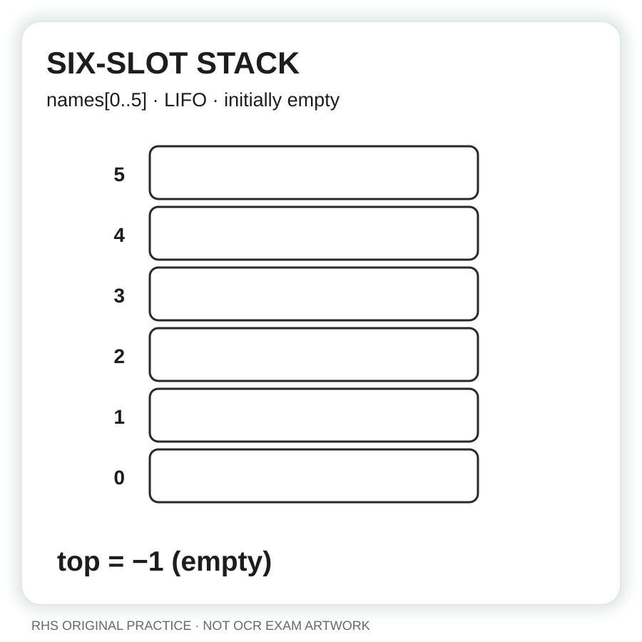
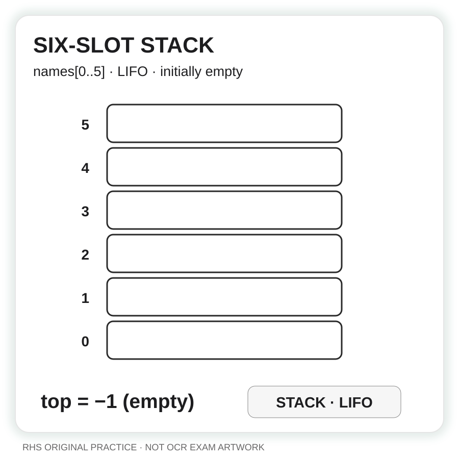
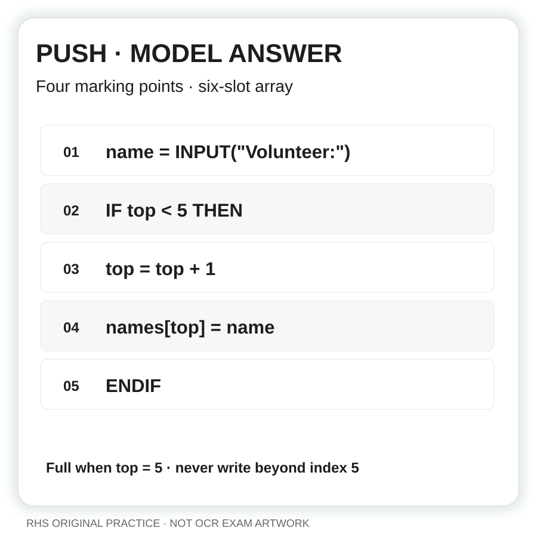
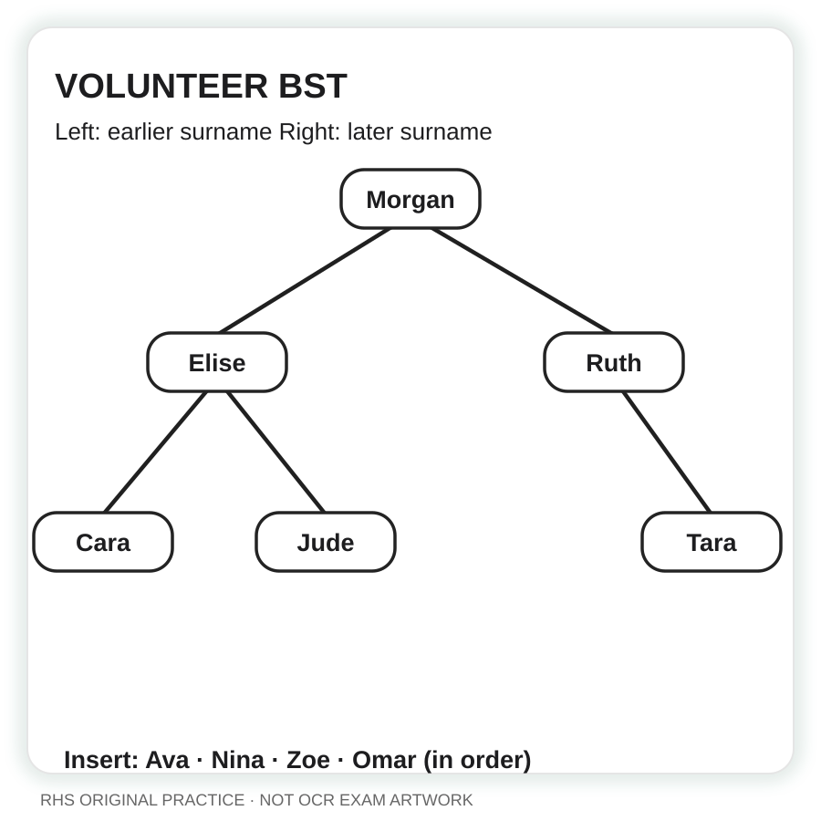
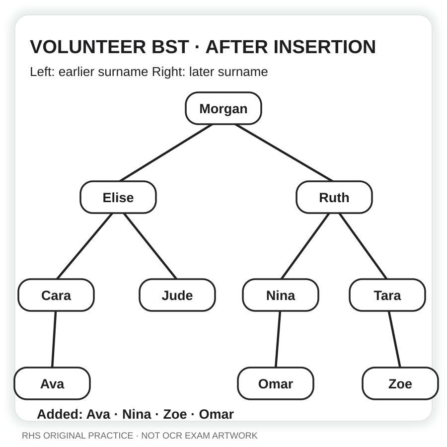
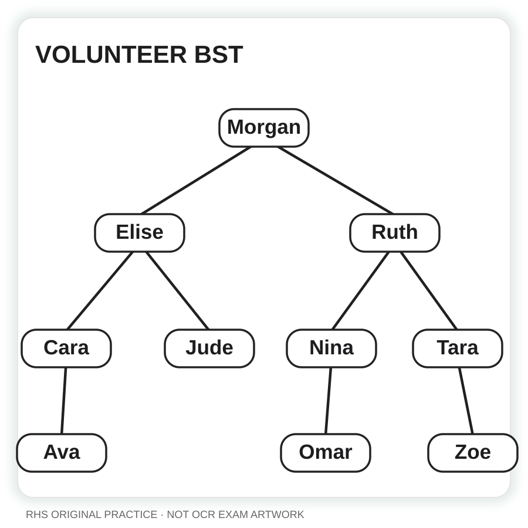
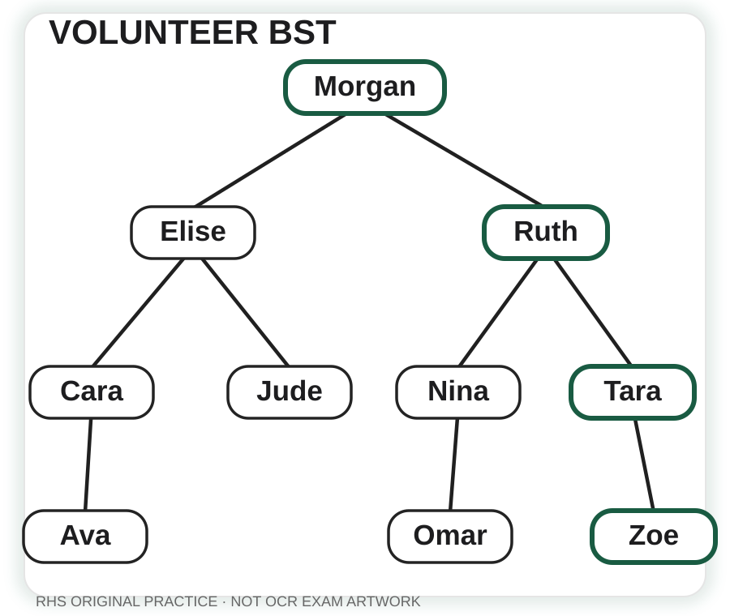

Q7(a)(i) · 1 mark
A theatre has an array-backed stack names[0..5] of six positions. The integer top indicates the newest occupied position, with −1 meaning empty. Identify the linear data structure described.
ANSWER · MARKING
Stack. [1]

Q7(a)(ii) · 4 marks
Using names[0..5], write pseudocode that inputs a volunteer name and PUSHES it only when an empty slot is available. Update top correctly.
ANSWER · MARKING
Award one mark each: input name; check top < 5; increment top; store name at names[top]. [4]


Q7(b)(i) · 4 marks
The rescue centre stores volunteer surnames alphabetically in this BST. Insert Ava, Nina, Zoe and Omar in that order. For each, name the parent and whether it is the left or right child.
ANSWER · MARKING
Ava: Cara’s left; Nina: Ruth’s left; Zoe: Tara’s right; Omar: Nina’s right. One mark each. [4]


Q7(b)(ii) · 3 marks
Using the BST after those four insertions, describe the comparisons when searching for Xena. State where the search stops.
ANSWER · MARKING
Xena > Morgan → Ruth; Xena > Ruth → Tara; Xena > Tara → Zoe; Xena < Zoe → null left child: not found. Marking alternatives require teacher verification. [3]
